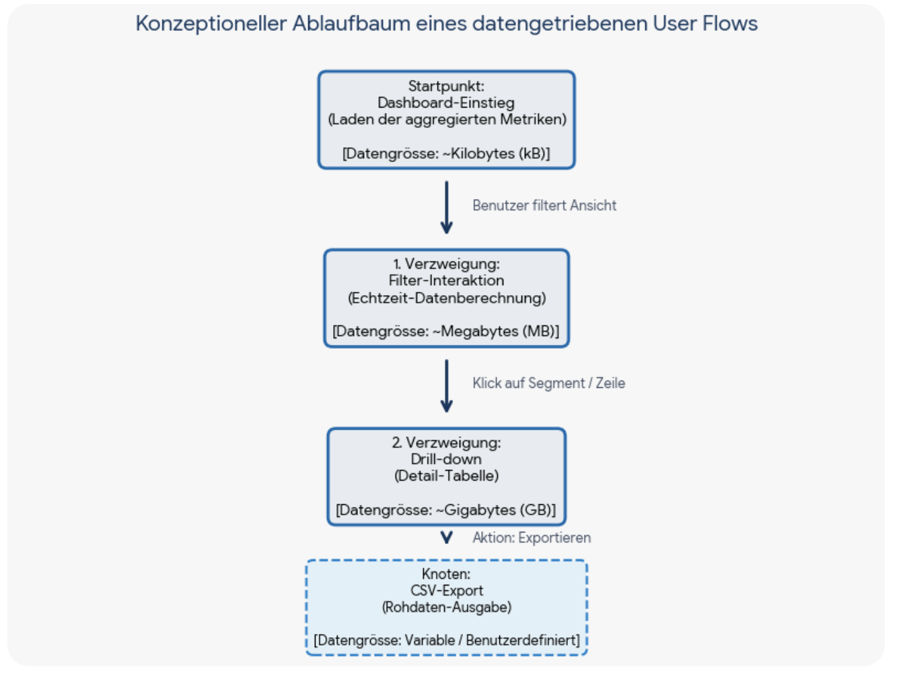

„Wie verändert sich der Blick auf die Daten, Schritt für Schritt“.
Startpunkt, nicht Endpunkt — ergänzt Details, die für euren Entwurf wichtig sind , oder erfindet eine eigene vierte Persona, wenn ihr eine Lücke seht.

Denkt in Zuständen eures Datensatzes, nicht in Screens. „Die Person wechselt von CH-weit auf Grossregion“ oder „von absoluten Fällen zu Inzidenz“ sind Datentransformationen — der „Screen-Wechsel“ dahinter ist fast nebensächlich. Ob das später durch einen Klick auf einen Filter, durch Scrollen oder durch eine neue Seite passiert, ist eine andere, spätere Frage, die heute ausdrücklich offen bleibt. Ein Daten-Flow ist kein Stapel Screens, sondern eine Abfolge von Fragen an die Daten und ihren visuellen Antworten.
Für die Weiterarbeit werden je zwei Gruppen mit unterschiedlicher Persona zusammengelegt.
| Kombi | Gruppe mit Persona | + Gruppe mit Persona |
|---|---|---|
| AB | Allgemeinbevölkerung | Medizin / Forschung |
| BC | Medizin / Forschung | Medienschaffende |
| CA | Medienschaffende | Allgemeinbevölkerung |
Am Ende liegen mehrere unterschiedliche Daten-Flows vor. Wie führt man das zu einer Lösung zusammen?